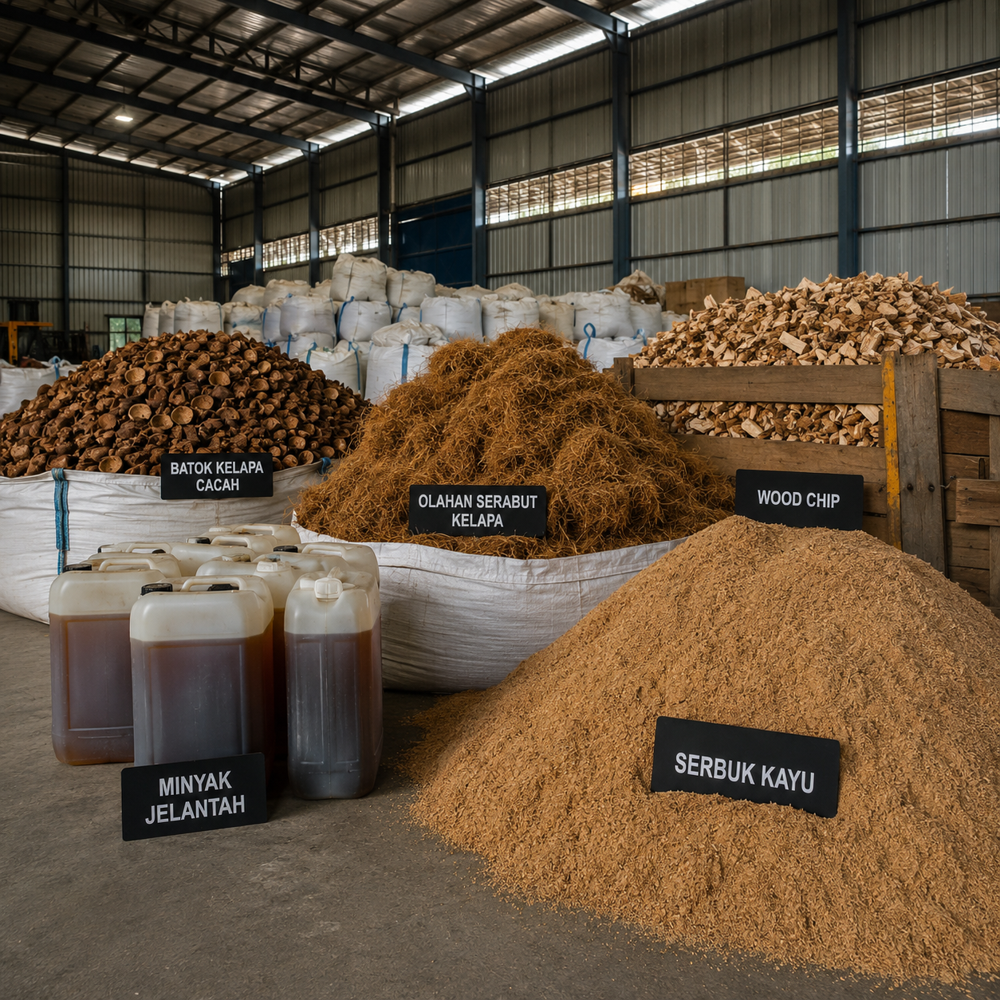
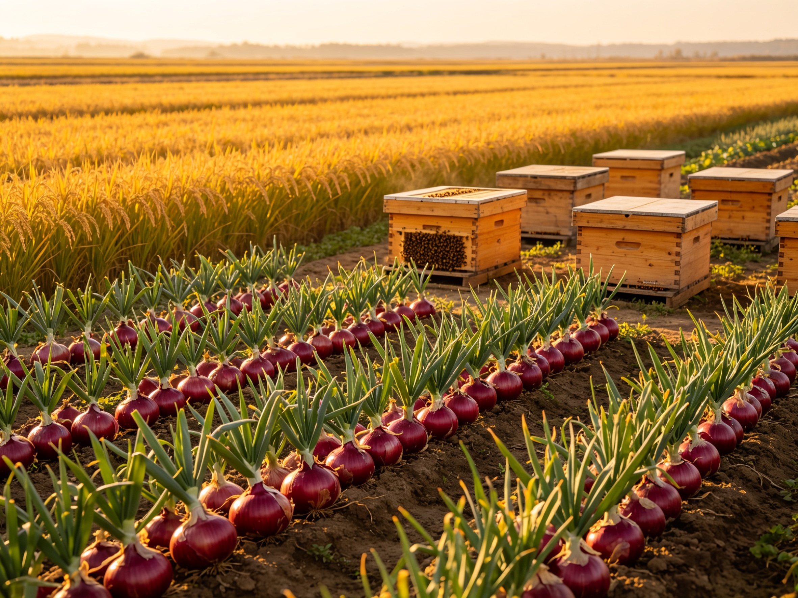

PT Waygo Sinergi Nusantara beroperasi pada level tertinggi dalam arsitektur rantai pasok. Sebagai Global Commodity Trading House, kami merevolusi sistem agregasi multi-regional di Indonesia untuk menjamin presisi volume, standarisasi kualitas industri, dan kepastian pengiriman bagi manufaktur multinasional.
Indonesia adalah episentrum sumber daya alam global dengan potensi kapasitas pasokan yang masif. Namun, industri manufaktur internasional seringkali menghadapi hambatan krusial ketika berhadapan dengan pasar ini: Infrastruktur suplai yang sangat terfragmentasi.
Pasokan komoditas—baik di sektor biomassa energi maupun agrikultur tersebar secara sporadis di ribuan titik terpencil melintasi kepulauan. Sistem ini dijalankan oleh jutaan entitas berskala mikro (petani independen, pengepul desa, atau pengumpul limbah) yang tidak memiliki kapabilitas untuk melakukan standarisasi kualitas tingkat industri (Industrial-Grade Standardization) maupun pemenuhan regulasi ekspor.
PT Waygo Sinergi Nusantara didirikan dengan satu mandat absolut: Menyelesaikan disfungsi pasar tersebut. Kami beroperasi bukan sekadar sebagai perusahaan perdagangan (broker/trader) konvensional, melainkan sebagai Strategic Procurement Bridge. Kami membangun infrastruktur fisik dan jaringan kemitraan yang luas untuk mengakuisisi komoditas dari level akar rumput, lalu membawanya ke fasilitas pengolahan sentral kami.
"Mengkonsolidasikan kapasitas lokal yang terpecah belah menjadi volume industrial masif, menerapkan parameter Quality Control (QC) bertaraf laboratorium internasional, dan pada akhirnya, menjamin Supply Stability (stabilitas pasokan) tanpa jeda bagi rantai operasi B2B global."
Menghubungkan point of origin langsung dengan end-buyer tanpa entitas perantara yang tidak jelas.
Sistem operasional dan agregasi eksklusif PT Waygo merancang ulang cara material diekstraksi, diproses, dan didistribusikan. Kami memegang kendali atas setiap touchpoint kritis untuk memitigasi risiko disrupsi volume dan fluktuasi spesifikasi kimia/fisik.
Titik inisiasi rantai pasok. PT Waygo secara agresif memetakan dan mengikat ribuan produsen primer—petani daerah, pengepul tingkat desa, hingga jejaring kolektor limbah (seperti UCO dari restoran)—di berbagai provinsi agrikultur Indonesia.
Material mikro yang dikumpulkan diangkut menuju Regional Processing Hubs mitra kami. Di tahap ini, penyortiran kontaminan primer dilakukan. Volume kecil disatukan menjadi batch menengah sebelum diestafetkan ke fasilitas pusat.
Jantung operasional. Volume komoditas membanjiri fasilitas sentral PT Waygo untuk menjalani Rigid Quality Control (QC) berbasis laboratorium. Material distandardisasi hingga presisi fraksi untuk mencapai kepatuhan (compliance) spesifikasi global.
Material diangkut menuju Port of Loading. Kami menerbitkan seluruh perizinan kepabeanan, Phytosanitary, hingga Bill of Lading, memastikan pengiriman kargo (FOB/CIF) ke pelabuhan tujuan buyer tepat waktu tanpa gagal spec.
PT Waygo Sinergi Nusantara berfokus pada dua sektor fundamental yang menjadi urat nadi perindustrian global modern: Energi Terbarukan & Keamanan Rantai Pangan.

Dirancang secara spesifik untuk menyuplai feedstocks ramah lingkungan skala besar. Menangani ribuan metrik ton komoditas residu dan karbon untuk mendukung transisi energi hijau dunia.

Mengelola rantai pasok agrikultur paling kompleks. Kami membina jaringan petani lokal dan mengekstrak hasil bumi kualitas premium untuk menjamin suplai industri pengolahan makanan, ritel, dan farmasi.
Operasi pabrik berskala besar menuntut kepastian presisi. Fluktuasi pasokan adalah ancaman bagi margin profit. Berikut alasan mengapa manufaktur global mengandalkan kapabilitas agregasi PT Waygo Sinergi Nusantara.
Kami memitigasi risiko gagal panen atau kendala cuaca lokal dengan tidak mengandalkan satu titik suplai (Single Point of Failure). Network multiregional kami memastikan volume pasokan dialihkan dari region surplus ke region defisit secara instan.
Infrastruktur permodalan dan fasilitator gudang kami dirancang murni untuk B2B Procurement. Kami tidak melayani retail eceran. Kami siap menandatangani dan mengeksekusi Long-term Contract (kontrak jangka panjang) dengan volume ratusan hingga ribuan metrik ton.
Sebelum kargo dimuat (stuffing), komoditas melewati pengujian parameter di fasilitas kami. Mulai dari reduksi kelembapan (moisture removal), penurunan kadar FFA (untuk UCO), hingga penyingkiran kotoran makro (impurities filter) demi mencegah penolakan barang.
Klien B2B internasional dapat duduk tenang. Sistem koordinasi perdagangan (Trade Coordination Center) kami menata urusan pelik: perizinan kuota, dokumentasi bea cukai lokal, penerbitan Certificate of Origin, hingga Inland Freight dari gudang ke Pelabuhan.
Kami adalah entitas legal terdaftar dengan track record perbankan yang kredibel. PT Waygo sepenuhnya siap mengakomodasi pembayaran perdagangan global berbasis Irrevocable Letter of Credit (L/C) at sight dari bank-bank tier 1 global untuk melindungi kepentingan kedua belah pihak.
Tuntutan Eropa terhadap RED II dan kebijakan Anti-Deforestasi sangat ketat. Kami merancang arsitektur dokumentasi data yang memungkinkan komoditas kami dilacak mundur (backward traceability) hingga titik koordinat kebun atau lokasi ekstraksi awal.
Kebijakan nol toleransi terhadap pekerja anak, deforestasi ilegal, dan eksploitasi petani daerah. Harga akuisisi adil (Fair Trade).
Kerangka kerja logistik biomassa (UCO/PKS) dikonstruksi agar memenuhi prasyarat Renewable Energy Directive Eropa untuk Biofuel.
Ekspansi node pergudangan dan pengumpulan mikro yang membentang di pulau Sumatera, Jawa, Sulawesi, dan kepulauan strategis lainnya.
Menyediakan Certificate of Analysis (CoA) preshipment yang divalidasi oleh lembaga surveyor independen terakreditasi internasional.
Panduan komprehensif terkait model operasi, ketentuan pengadaan, dan prosedur logistik global PT Waygo Sinergi Nusantara.
Gunakan portal pengajuan resmi ini untuk permohonan spesifikasi komoditas (Spesification Request), kuotasi harga, penawaran kontrak Long-Term, serta pendaftaran kemitraan supply. Tim Global Trade Desk Waygo Sinergi Nusantara siap menganalisis kebutuhan operasional pabrik Anda.
Hanya melayani entitas legal B2B.
+62 856 413 660 30(GMT+7, Office Hours)
Pusat Manajemen Logistik, Brebes, Indonesia.
Detail alamat fisik dan site map gudang diberikan pada tahap verifikasi NDN eksklusif.
PT Waygo Sinergi Nusantara (The Company, We, Us) operates as a legal corporate entity under the jurisdiction of the Republic of Indonesia. The submission of forms, communications, and digital interactions across this portal triggers the collection of corporate metadata strictly for procurement evaluation, vendor qualification, and transactional execution purposes.
Data Utilization: We do not engage in the retail commodification of client data. Information explicitly submitted—including company names, RFQ details, targeted procurement volumes, and corporate email addresses—is stored exclusively within encrypted enterprise servers. This data will only be utilized by our Global Trade Desk to formulate accurate Full Corporate Offers (FCO) or to dispatch due diligence forms for potential suppliers.
Non-Disclosure Agreement (NDA): Standard B2B protocols apply. Volumetric requirements and intellectual property concerning product formulations shared during procurement negotiations remain rigidly confidential under intrinsic NDA practices inherent to global trade standards, barring legal requisition by sovereign authorities.
The content documented on this corporate interface serves as an informative architectural framework of our operational capabilities. It does not constitute a binding legal offer or a unilateral contract. Supply chain capacities, monthly yield volumes, and commodity specifications presented are indicative and subject to macro-environmental shifts, seasonal volatility, and prior long-term allocations.
Contractual Execution: All international commerce and domestic industrial transactions facilitated by PT Waygo Sinergi Nusantara are strictly governed by formal written contracts drafted following standard Incoterms® 2020 regulations published by the International Chamber of Commerce (ICC). Quality metrics are solely governed by the independent Certificate of Analysis (CoA) issued at the designated Port of Loading.
Anti-Bribery & Sanctions: The Company enforces zero-tolerance compliance regarding the Foreign Corrupt Practices Act (FCPA) and comparable local graft laws. We categorically refuse business transactions with entities listed under international sovereign sanction lists.